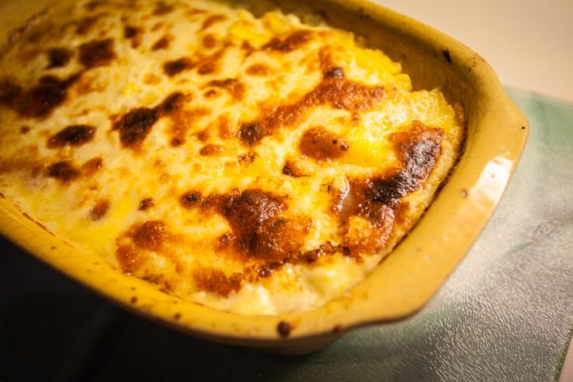

Balmoș (Transylvanian cheese polenta)

Description
Balmoș – or cheese polenta is a rich, smooth cheesy dish, absolutely delicious.
Yogurt makes it a little tart tasting, a perfect side dish along a fresh salad, meat, sauteed mushrooms or various meat sauce.
If you like cornmeal recipes you should definitely give this cheese polenta a try.
Ingredients
- 500ml whey
- 200ml water
- 200g corn flour
- 50g butter
- 200g caș or branză de burduf (can use any hard and strongly flavoured cheese instead)
- 1 pinch salt
Steps
- Bring the whey and water to a boil and then slowly add in the corn flour, mixing constantly with a whisk (beware: flying bits of boiling polenta are painful, so you might want to reduce the heat before that happens).
- Add the butter, salt to taste, and keep whisking for about 5-7 minutes or until the mixture turns into a nice homogenous and creamy paste. It is now ready to eat!
- Our tip: put the balmoș in an oven-friendly plate, interlaced with layers of caș or brânză de burduf, add some sour cream and let it rest in the oven for about 15 minutes. The result is an amazing crispy crust, so delicious that you will lick the plates clean!